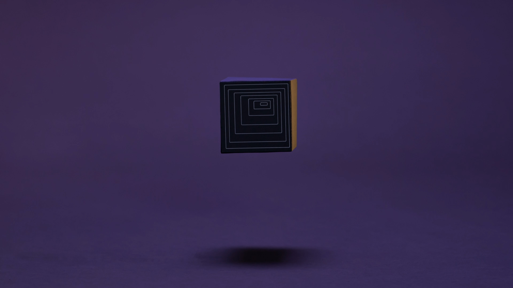

M2 (Metro Cuadrado)

Los cuerpos contenidos en el cubo, símbolo de encierro y a la vez de resguardo, necesitan escapar pero no pueden. Ganador del “Concurso Nacional de Producción de Videominuto de Animación, Temática “Del Encierro” 2020”
Guión y Dirección: Ana Martín - Poli Bellato - Bela Tagliabue
Producción: Karina Fuentes y Romina Savary
Dirección de Animación: Ana Martín
Direccion de Fotografia: Bela Tagliabue
Dirección de Arte: Paola Bellato
Diseño y Postproducción de Sonido: Gerardo Perez
Link a Teaser